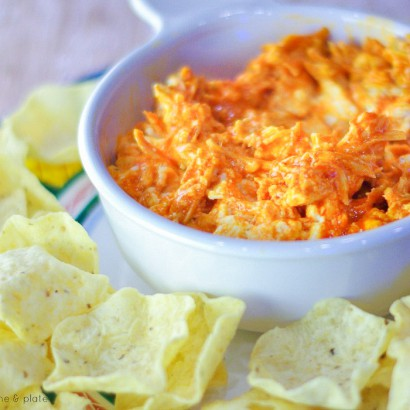

Buffalo Chicken Dip

Description
This is a recipe for an excellent buffalo chicken dip.
This is the perfect addition to some chips or can be used to impress if you have company over to add some flair to your chips!
Ingredients
- One 15 ounce jar of chunky-style blue cheese salad dressing
- One 8 ounce package of cream cheese, softened
- 3 cooked chicken breasts, shredded
- One 12 ounce bottle of buffalo sauce
- One 4 ounce package of blue cheese crumble
Steps
- Preheat oven to 350 degrees F (175 degrees C).
- Stir blue cheese salad dressing and cream cheese together in a mixing bowl. Stir chicken, Buffalo wings sauce, and blue cheese crumbles into the salad dressing mixture; pour sauce into a baking dish.
- Bake in preheated oven until bubbling, 15 to 20 minutes.
- Serve!